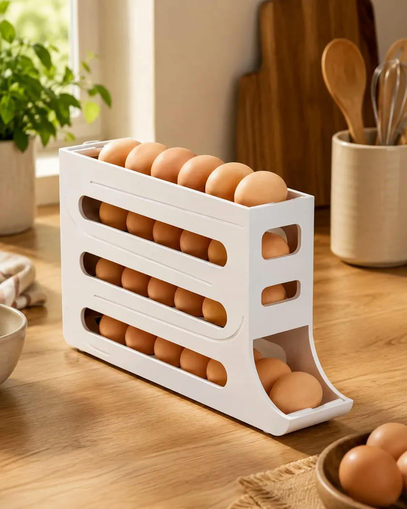
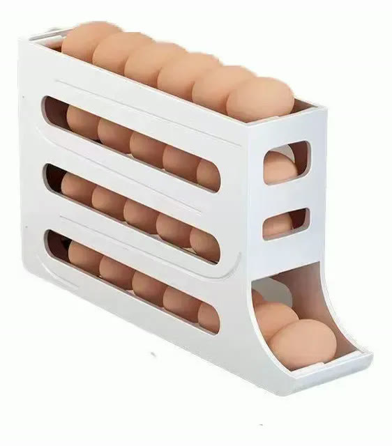
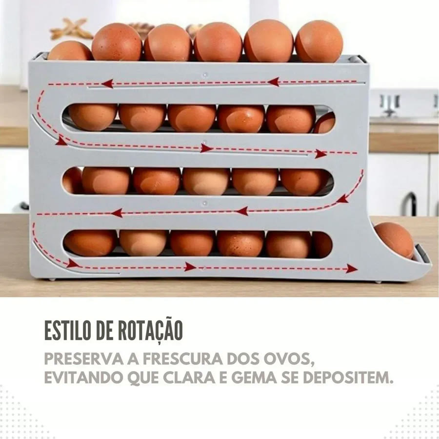
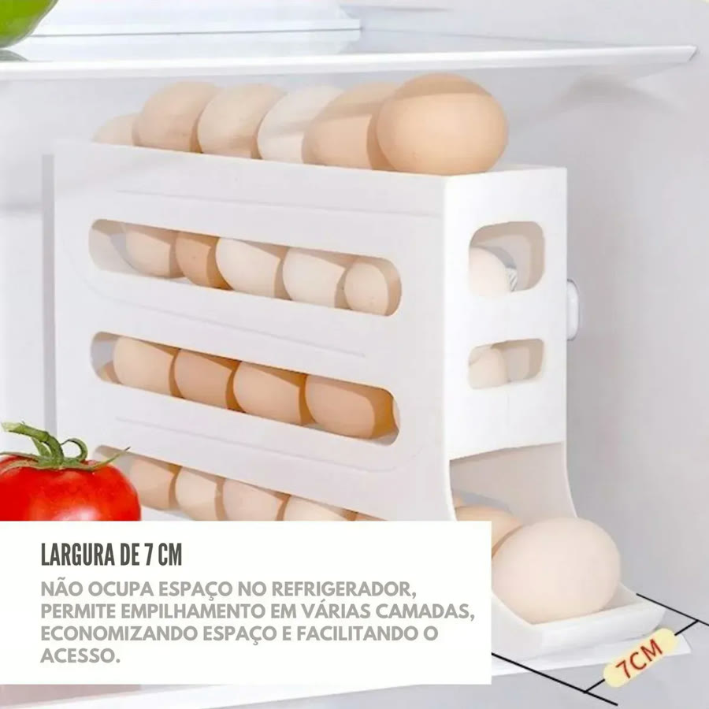
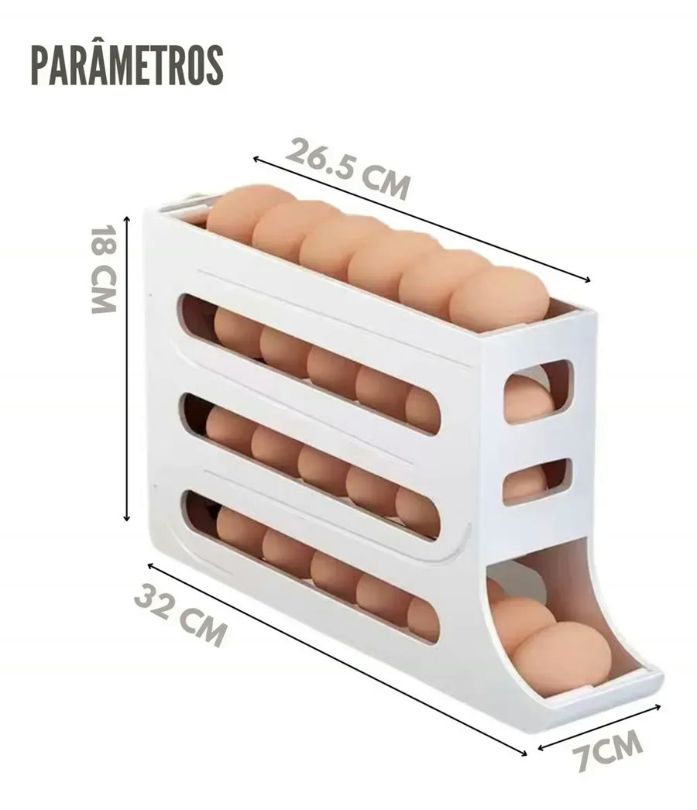

Achado nº 86
Porta-ovos dispenser de 4 andares





O que diz a página oficial do produto
- É um porta-ovos branco de plástico com 4 andares em rampa: os ovos ficam deitados e rolam até a saída de baixo
- Segundo o anúncio, ao tirar o ovo de baixo, o próximo rola sozinho para o lugar
- Mede 18 centímetros de altura e 7 centímetros de largura
- Segundo o anúncio, a largura estreita deixa usar dentro da geladeira, inclusive na porta
- Não tem tampa e não vai na lava-louças
- Vem 1 porta-ovos
- No Mercado Livre, tem nota 4,5 com mais de 2 mil avaliações e mais de 10 mil vendidos
Link de afiliado: se você comprar por ele, a Achadaria pode receber uma comissão, sem custo extra para você. Preço, estoque e entrega são da loja e podem mudar; confira lá antes de comprar.